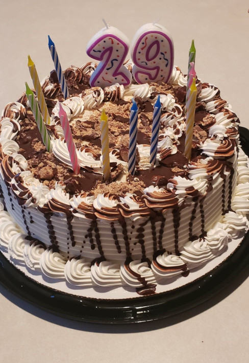
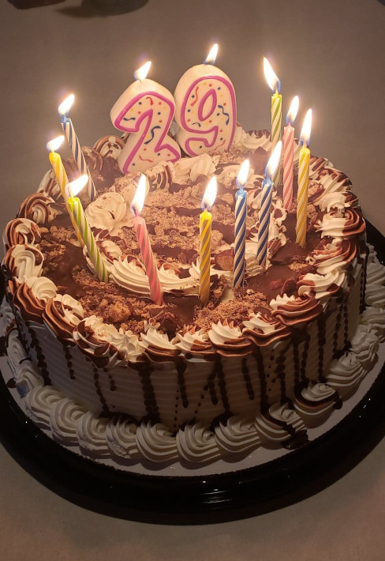
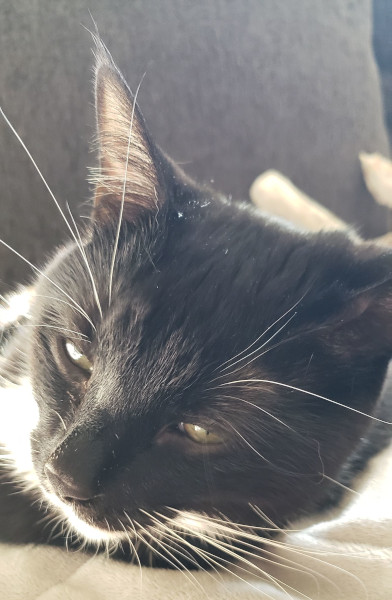
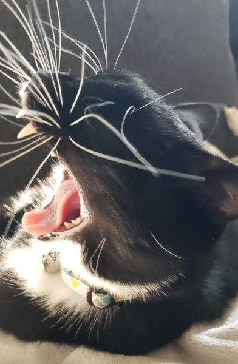

TwentyTwenty Plugin
The TwentyTwenty plugin lets you have two pictures overlap each other and then have a moving handle to transition from one picture to the other. The plugin makes this possible by adjusting the image's clip property when the handle moves.
Once you call the TwentyTwenty method on the container with your two pictures, everything else is done with CSS. If you don't have any styling, then once you call the method you will simply have the two pictures next to each other, as if nothing is different. Because of this, the styling from TwentyTwenty has been adapted for this page, with comments added in the CSS indicating which block of code handles which component.



